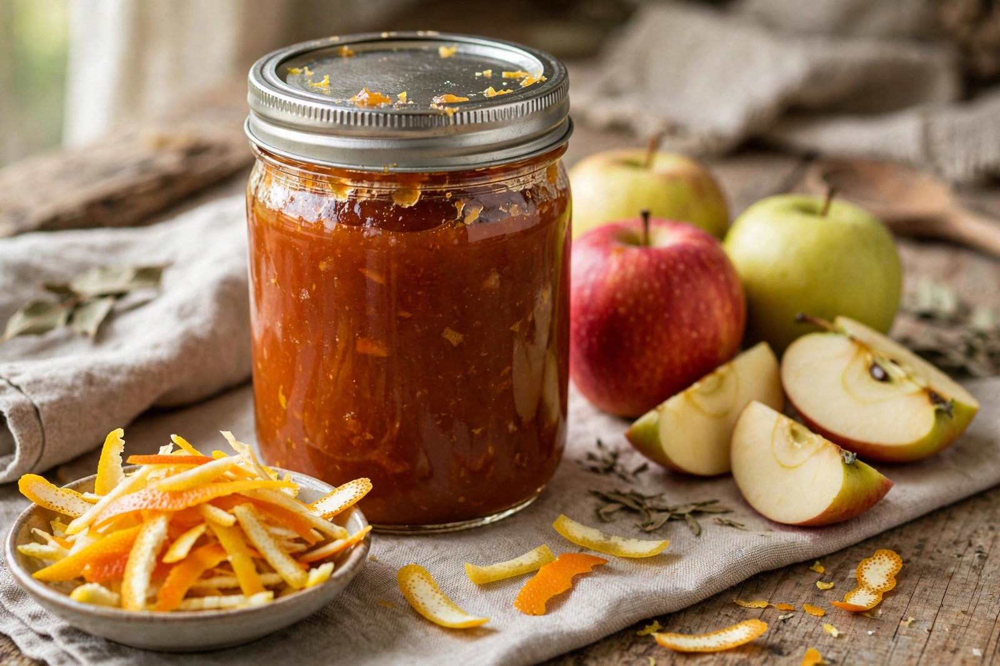

Pectin

Type: Polysaccharide (heteropolysaccharide)
Sources: Apple pomace, citrus peel
Food use: Gelling agent (E440)
Pectin is a structural polysaccharide found in the primary cell walls and middle lamella of terrestrial plants, where it helps regulate growth and cell adhesion. It was first isolated and described in 1825 by the French chemist Henri Braconnot. Commercially, pectin is a white to light brown powder, extracted mainly from apple pomace and citrus peel, and used chiefly as a gelling agent in food.
Use in food
Pectin is best known for setting jams and jellies: under the right conditions of acidity and sugar concentration, pectin chains form a gel network as the mixture cools. Traditional jam-making relies on the pectin naturally present in fruit — high in apples, quinces, plums and citrus peel, low in strawberries and cherries, which is why low-pectin fruits are combined with pectin-rich ones or with added commercial pectin, including in the making of chutney-style preserves. Pectin is also used in fruit yoghurts, acidified milk drinks, confectionery and as a fat substitute and stabiliser; it is designated food additive E440.
Chemistry
Pectin consists mainly of α-(1→4)-linked D-galacturonic acid units, partly esterified with methanol. High-methoxyl pectins gel with sugar and acid, while low-methoxyl pectins gel in the presence of calcium ions, allowing reduced-sugar products. In the human diet pectin is a soluble dietary fibre, fermented by gut bacteria.